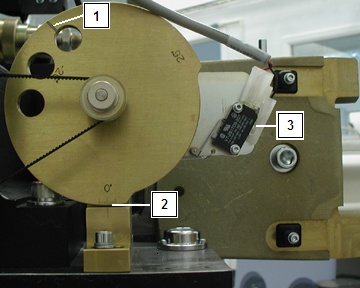
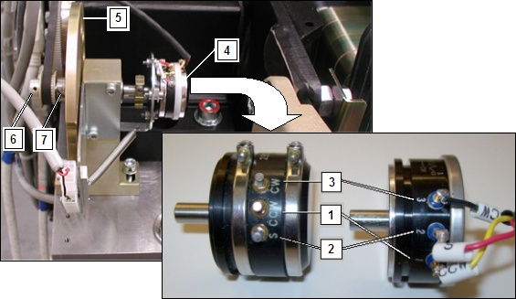

Operating Documentation
Direction 5181178-800, Rev# 16
BrightSpeed Select Service Methods Gen
Module Version 1.1, Version Date 3/30/10
Operating Documentation |
| Required Persons | Preliminary Reqs | Procedure | Finalization |
|---|---|---|---|
| 1 | Not Applicable | Not Applicable |
| Last revised: | 15-Apr-2010 |
| Item | Qty | Effectivity | Part# | Manufacturer | |
|---|---|---|---|---|---|
| Standard FE Toolkit | 1 | - | - | - | |
| ||||
| Potential for Shock | ||||
| Voltage Present | ||||
| Make sure to keep body parts away from exposed circuits while performing this procedure. |
| Condition | Reference | Effectivity |
|---|---|---|
Gantry 120 VAC power is required during this procedure. | - | - |
Only trained service personnel should service the GE CT scanner. | - | - |
Remove Right and Left Gantry Covers.
| ||||
| CRUSH HAZARD. | ||||
| UNEXPECTED GANTRY ROTATION CAN CAUSE SERIOUS INJURY. | ||||
| Never service the gantry with the axial drive enabled. |
Turn off two switches (Axial Drive and HVDC) on the Service Switch Panel, leaving the 120V AC power ON.
Refer to Illustration 1 Check the zero degree indicator on the tilt cam, the gantry should be at zero degrees [2]. Do not use the line over one of the holes [1]. The Tilt Switch should be disengaged [3].
| NOTE: | Using the service tool, select Diagnostics > System Troubleshooting Tool > Gantry Display to view actual tilt data. |
Illustration 1: Tilt View

Refer to Illustration 2. The Type 1 pot is shown on the left and the Type 2 pot is shown on the right. With the gantry powered up with 120VAC, there should be 5V DC at the tilt potentiometer. Use a voltmeter to measure across “CCW” (+) [1] and “CW” (-) [3] making sure to note the exact reading.
| NOTE: | There are two different types of Tilt Potentiometers. Type 1 is the original and Type 2 has been introduced as a replacement for Type 1. The difference between the two pot types is the physical location of the Wiper Terminal identified on the Type 1 pot as "S" and on the Type 2 pot as "2". In both configurations the cable labeling for each terminal has been changed to indicate both identifiers for each terminal connection to either pot type directly on the cable label. Verify the replacement type during its installation prior to making the adjustment to the tilt pot. |
Illustration 2: Tilt Pot Location Side View

Tilt Pot Type 1 (orginal) Shown on Left, Type 2 (replacement) Shown on Right.
Divide the reading in half for use in the next steps. One half the total voltage read in the previous step will be called the “Voltage Centerpoint”, which should be about 2.5V.
Refer to Illustration 2. If the voltage reading is not correct, you will need to loosen the set screw for the 32 tooth pulley, which allows the pot shaft can be turned without the pulley and belt connected [6].
Refer to Illustration 2. Use a voltmeter to measure “S” (+) [2] and “CW” (-) [3]. If it does not read the Voltage Centerpoint +/- 0.2V, then turn the shaft by rotating the Tilt Cam [5] until the potentiometer [4] reads the Voltage Centerpoint value.
With the position determined, tighten the set screws on the 32-tooth pulley[6]. The belt will then hold the shaft in place.
Loosen the socket head cap screw on the CAM clamp [7].
Refer to Illustration 1. Set the CAM to the zero degree mark. The micro switch is disengaged when this mark is lined up [2].
Tighten the socket head cap screw on the CAM clamp.
The potentiometer is now aligned to the CAM. 0 degrees Tilt = Voltage Centerpoint +/- 0.2V on the potentiometer.
Verify the gantry displays zero degrees when the tilt cam is also showing zero degrees.
Perform Tilt Characterization.
Run the Tilt Characterization procedure from the Service Desktop, Calibration > Mechanical Calibration
Select the [Characterization Tilt] button and follow the instructions on the screen.
| NOTE: | When not in the Service Mode, normal tilt button function provides 0.5 degrees per button press, which is not enough resolution for proper characterization. On the Service Panel, set Service Mode switch S4 to ON to enable a fine tune adjustment of the tilt angle. Remember to turn S4 OFF when done. |